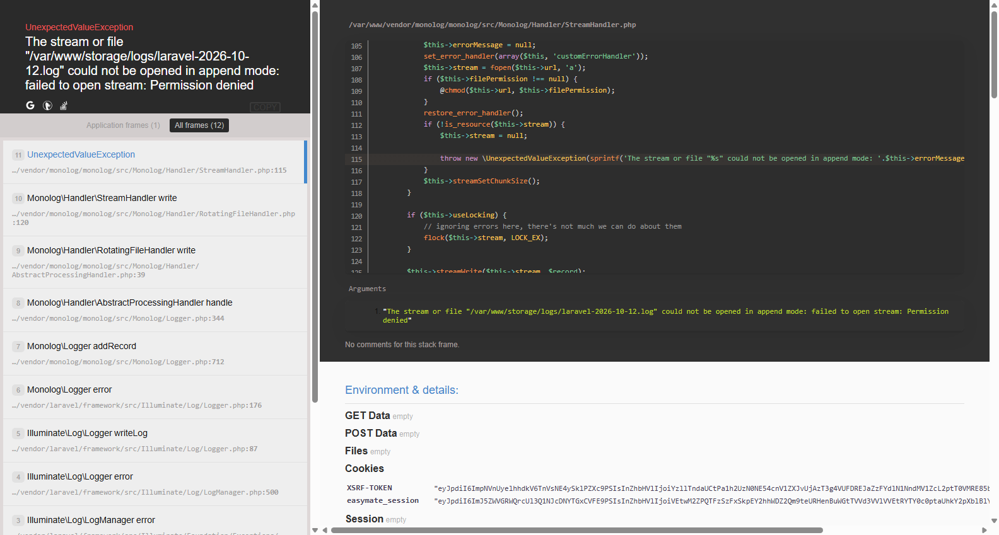

05 — Glossary and FAQ
EasyMate ERP — Academic Terminology, Grading Rules, Formulas & Operational FAQ
This document provides a reference for university terminology, grading and assessment models, financial billing algorithms, and operational frequently asked questions across all user roles in EasyMate ERP.
Verification Status: Business logic, algorithmic formulas, and operational workflows are verified in the codebase. Active database configurations and official academic ordinance policies are explicitly noted where runtime verification applies.
1. Academic & ERP Glossary
General & Academic Architecture
| Term | System Entity | Definition |
|---|---|---|
| Exam Session | exam_session |
The primary operational term/semester period in the ERP (e.g., Spring-2026, Fall-2026, Summer-2026). Governs registration, scheduling, billing, and result publication. |
| Intake Session | session (Student) |
The academic session in which a student originally enrolled at Varendra University (e.g., Spring-2024). Binds the student to a specific curriculum syllabus. |
| Program Version | ProgramVersion |
Configuration entity linked to an academic program defining semesters_per_year (2 for Bi-semester, 3 for Tri-semester), total_years, and payment_installments. |
| Syllabus | Syllabus |
The approved set of course requirements, credit hours, and semester structures bound to an intake cohort. |
| Batch Number | batch |
Calculated cohort identifier derived from the student's intake session and program (e.g., 28th Batch). |
| Regular Course | type = 'regular' |
A course taken by a student as prescribed for their current semester in the syllabus. |
| Retake Course | type = 'retake' |
Re-enrolling in a previously attempted course in which the student failed ($GP = 0.00$ or Absent/Expelled). Billed at 50% tuition rate per credit. |
| Improvement Course | type = 'improvement' |
Re-enrolling in a passed theory course where the earned grade was $GP \le 2.75$ ($B-$ or lower) to raise the grade point. Billed at 25% tuition rate per credit. Sessional/lab courses cannot be improved. |
| Backlog Course | — | Any incomplete course from a preceding semester that must be cleared before degree completion. |
| Course Exemption | exempted_courses |
Course credits transferred from another university or accredited institution. The course credit counts toward graduation requirements, but no grade point is factored into CGPA. |
| Collegiate | collegiate |
Student whose lecture attendance is $\ge 75\%$ (Undergraduate/Master) or $\ge 60\%$ (other programs). Eligible for final examinations without penalty. |
| Non-Collegiate | non-collegiate |
Student whose attendance falls between $50\%$–$74\%$ (or $40\%$–$59\%$). Allowed to sit for final exams only after paying a prescribed non-collegiate penalty fee. |
| Dis-Collegiate | dis-collegiate |
Student whose attendance falls below $50\%$ (or $< 40\%$). Barred from the semester final examination; must retake the course. |
| Semester Drop | dropped |
Formal academic withdrawal from an active semester prior to final exams (final != 'p'). Subject to a semester drop / readmission fee. |
| Readmission | Readmission |
Registration of a student who was not promoted or dropped a semester back into the same semester level in a subsequent session. |
| Completed Student | completed = 1 |
A student who has satisfied all required syllabus credit hours, passed all mandatory courses, achieved cumulative $CGPA \ge 2.00$ (subject to policy confirmation), and received degree clearance. |
Accounts & Financial Terminology
| Term | System Entity | Definition |
|---|---|---|
| Account Head | FeeSetting |
A categorized fee item (e.g., Head 1: Tuition Fee, Head 2: Semester Fee, Head 3: Development Fee, Head 4: Exam Fee, Head 5: Lab Fee, Head 8: Non-Collegiate Fee, Head 11: Improvement Fee, Head 12: Retake Fee, Head 13: Drop Fee). |
| Invoice (Type 1) | invoice_type_id = 1 |
Form Sale / Application Fee invoice generated when an applicant applies for admission. |
| Invoice (Type 2) | invoice_type_id = 2 |
Semester Registration Invoice comprising tuition, lab, exam, and semester fees for registered courses. |
| Invoice (Type 3) | invoice_type_id = 3 |
Miscellaneous Document Invoice generated for transcripts, certificates, ID card replacement, or testimonials. |
| Installment | Installment |
Sub-divided payment portion of a semester invoice (e.g., 1st, 2nd, 3rd installment) with separate due dates. |
| Ledger (Debit - D) | Ledger (type = 'D') |
An accounting entry representing an amount owed by the student to the university (e.g., invoice generation). |
| Ledger (Credit - C) | Ledger (type = 'C') |
An accounting entry representing cash or bank payments received from the student. |
| Ledger Balance | ledgerBalance() |
Net outstanding balance ($\sum D - \sum C$). If debits exceed credits, the student has outstanding dues. |
| Financial Clearance | accountClearUpto() |
Validation that all debit entries up to a designated exam session have matching credit entries. Required for exam admit card and registration. |
| Tuition Waiver | Waiver |
Scholarship discount applied strictly against regular tuition fees (not fixed administrative or lab fees). |
| Payment Posting | invoices.posting |
The formal verification and entry of a student bank receipt or cash payment by an Accounts Officer. |
Examination & Grading Terminology
| Term | System Entity | Definition |
|---|---|---|
| Assessment Rule | AssessmentRule |
Percentage breakdown of assessment components for a course (e.g., Theory: Attendance 10%, CT 20%, Midterm 30%, Final 40%). |
| Examiner | examiner |
The appointed faculty member authorized to grade student assessments for a specific course and section. |
| Submission | Submission |
The action by which an examiner locks marks entry and submits grades to the Controller of Examinations. |
| Approval | Approval |
Formal verification of submitted marks by the Controller of Examinations, triggering creation of CourseResult records. |
| Course Result | CourseResult |
The permanent grade record for a student in a course, storing total marks, Grade Point (GP), and Letter Grade (LG). |
| Semester Result | SemesterResult |
Consolidated semester performance record storing SGPA, total marks, registered credits, earned credits, and batch rank. |
| Result Publication | Result (published = 1) |
Action by the Examination Controller releasing semester results to students on the portal. |
| Best Attempt Rule | app/Student.php |
University policy where the highest Grade Point earned across multiple attempts (regular, retake, improvement) is selected for CGPA calculation. |
2. Grading System Specification (Database Seed Baseline & Formula Reference)
Technical Implementation in Code
In EasyMate ERP, grade resolution is dynamic:
1. Grade::calculate($total, $obtained, $status) calculates percentage:
$$\text{percentage} = \frac{\text{obtained} \times 100}{\text{total}}$$
2. It queries all rows from the grades table (Grade::all()) and matches:
$$\text{low} \le \text{percentage} < \text{high}$$
3. If the candidate was absent or expelled in the semester final exam, the method returns F ($GP = 0.00$).
Grading Scale Authority & Policy Disclaimer RDC:
The table below documents the default database seed configuration defined in database/seeds/GradesTableSeeder.php. Because EasyMate queries this table dynamically at runtime, this table should not be described as unconditionally authoritative across all programs without verifying the active rows in the database grades table and confirming the applicable university academic regulations (such as Varendra University's approved 11th Academic Ordinance).
Seeded Grade Table Baseline (database/seeds/GradesTableSeeder.php)
| Percentage Range (low to high) | Letter Grade (LG) | Grade Point (GP) | Qualitative Assessment | Academic Implications in Code |
|---|---|---|---|---|
| 80.00% to 101.00% | A+ | 4.00 | Outstanding | Distinction; eligible for maximum merit scholarship |
| 75.00% to 80.00% | A | 3.75 | Excellent | Honors standing |
| 70.00% to 75.00% | A- | 3.50 | Very Good | Strong academic standing |
| 65.00% to 70.00% | B+ | 3.25 | Good | Above average performance |
| 60.00% to 65.00% | B | 3.00 | Satisfactory | Standard competency |
| 55.00% to 60.00% | B- | 2.75 | Above Average | Ceiling for Course Improvement: Grades above $B-$ cannot be repeated for improvement |
| 50.00% to 55.00% | C+ | 2.50 | Average | Eligible for course improvement |
| 45.00% to 50.00% | C | 2.25 | Below Average | Eligible for course improvement |
| 40.00% to 45.00% | D | 2.00 | Pass | Minimum passing grade; eligible for improvement |
| 0.00% to 40.00% | F | 0.00 | Fail | Failed course; mandatory retake; no credit earned |
Assessment Attendance Flags
| Flag | Meaning | Impact on Grading in Code |
|---|---|---|
p |
Present | Student appeared; entered assessment score is counted. |
a |
Absent | Student was absent; counted as 0 marks. |
e |
Expelled | Disciplinary expulsion; counted as 0 marks and flagged for disciplinary review. |
3. Mathematical Models & ERP Calculation Formulas
3.1 Semester Grade Point Average (SGPA)
$$\text{SGPA} = \frac{\sum_{i=1}^{n} (\text{Credit}i \times \text{GP}_i)}{\sum$$}^{n} \text{Credit}_i
- $\text{Credit}_i$: Credit hours of the $i$-th registered regular course in the semester.
- $\text{GP}_i$: Grade Point earned in the $i$-th course.
- Calculated across all regular courses registered in that exam session. Rounded to two decimal places.
3.2 Cumulative Grade Point Average (CGPA)
Current CGPA (Active Students)
$$\text{CGPA}{\text{current}} = \frac{\sum}^{m} (\text{Creditj \times \text{Best_GP}_j)}{\sum}^{m} \text{Creditj}$$ - Calculated across all distinct completed courses where the student earned $GP > 0$. - Under the Best Attempt Rule, if a course was attempted multiple times (regular + retake/improvement): $$\text{Best_GP}_j = \max(\text{GP}, \dots)$$} 1}, \text{GP}_{\text{attempt } 2
Final Graduating CGPA
$$\text{CGPA}_{\text{final}} = \frac{\sum (\text{Credit} \times \text{Best_GP})}{\text{Syllabus Required Credits} - \text{Exempted Credits}}$$ - Evaluated against total curriculum credit requirements.
3.3 Tuition Billing & Invoice Calculation
$$\text{Total Invoice Amount} = \text{Net Tuition} + \text{Retake Fee} + \text{Improvement Fee} + \sum \text{Fixed Head Amounts} + \text{Penalties}$$
Where: 1. Regular Tuition Fee: $$\text{Gross Tuition} = \text{Program Rate per Credit} \times \text{Regular Credits}$$ 2. Tuition Waiver Discount: $$\text{Net Tuition} = \text{Gross Tuition} \times \left(1 - \frac{\text{Waiver \%}}{100}\right)$$ (Note: Waivers apply exclusively to regular tuition fees; fixed administrative, lab, and exam fees are never discounted). 3. Retake Fee: $$\text{Retake Fee} = \text{Program Rate per Credit} \times 0.50 \times \text{Retake Credits}$$ 4. Improvement Fee: $$\text{Improvement Fee} = \text{Program Rate per Credit} \times 0.25 \times \text{Improvement Credits}$$ 5. Non-Collegiate Penalty: Assessed under Account Head 8 if prior attendance fell in the 50%–74% bracket. 6. Semester Drop / Readmission Fine: Account Head 13 (BDT 1,000) applied if returning after an unapproved semester drop.
3.4 Student Financial Clearance Check
$$\text{Financial Standing} = \sum_{k \le S} \text{Ledger Debits}k - \sum_k$$} \text{Ledger Credits
- If $\text{Financial Standing} \le 0$: Student is Financially Clear up to Session $S$.
- If $\text{Financial Standing} > 0$: Student has outstanding dues and is barred from registration and exam admit cards.
4. Frequently Asked Questions (FAQ)
4.1 For Applicants & Prospective Students
Q: I registered on the admission portal, but my name or date of birth is incorrect. Can I change it?
A: If your data was auto-populated from the Bangladesh Education Board (SSC/HSC) via Teletalk API, it is locked to maintain identity verification with official gazettes. If an official board correction was made, present your revised certificate to the Admission Office for administrative review.
Q: Why does my profile show 80% completion instead of 100%?
A: You must complete all 5 sections (/front/applicant/profile/edit/{type}): Personal (pi), Contact (ci), Education (eb), Guardian (lg), and Attachments (at). Ensure both your passport photograph and signature image are uploaded in the Attachments tab.
Q: I paid the application fee through the bank, but my admit card button is not active. What should I do?
A: Bank counter payments require manual posting by the Accounts Office. Once posted, or if paid via an integrated digital gateway, the Admit Card download button activates automatically under My Applications.
4.2 For Students
Q: Where can I view my semester results on the Student Portal?
A: Results are displayed inside your Profile under the Results tab (/front/student/profile?type=r). There is no standalone /front/student/result route. The Results tab displays course-by-course Letter Grades (LG), Grade Points (GP), calculated SGPA, and batch ranking once officially published.
Q: Why cannot I see my class routine on the Student Portal?
A: Routines are generated dynamically based on your registered courses and assigned section. If you have not completed semester registration, or if your registration is on hold for financial clearance, your routine will appear blank.

Q: Can I pay my 2nd installment before my 1st installment?
A: No. EasyMate ERP strictly enforces sequential payment posting in code (InvoicesController@posting_store). Installment 1 must be cleared before the system allows payment posting for Installment 2.
Q: Can I apply for an Improvement exam in a lab course?
A: No. Under university policy verified in code (prepareCourses), only Theory courses where your earned grade was $B-$ ($GP \le 2.75$) or lower qualify for improvement. Sessional and lab courses cannot be improved.
Q: I retook a failed course and received an A. Will the previous F grade lower my CGPA?
A: No. EasyMate ERP uses the Best Attempt Rule (app/Student.php). When calculating your Cumulative CGPA, the system automatically selects your highest grade ($A$, $GP = 3.75$) and excludes the earlier failed grade point from the cumulative calculation.
4.3 For Teachers / Faculty Members
Q: I logged in, but I cannot find my assigned course in the marks entry list.
A: Marks entry access requires that your user account is mapped as an active Examiner for that course and section in Class Schedule → Course Offer (courseoffers.index). Contact your Department Head or Schedule Admin to verify examiner assignment.
Q: I submitted marks for my course, but I discovered an error. Can I edit them?
A: Once you click Submit, your marks entry is frozen (Submission record created). To make corrections prior to Controller approval, request the System Administrator to execute an administrative Undo in Exam → Marks → Undo (marks.undo).
Q: What is the difference between marking Absent (a) versus 0 marks?
A: Marking a (Absent) documents that the candidate was physically absent from the examination hall, generating accurate attendance gazettes and distinguishing absenteeism from academic failure.
4.4 For Department Heads
Q: A student missed the auto-registration deadline due to medical leave. How can we register them?
A: When auto-registration is complete, the student record remains flagged manual = 1. Academic Office staff can perform a Manual Registration under Academic → Registrations → Registrations → Create (registrations.create), selecting the approved courses and sections.
Q: How do I verify whether all faculty members in my department have submitted their semester marks?
A: In Exam → Marks, filter by your department's program and session. Rows lacking a submission badge indicate pending submissions.
4.5 For Admission Officers
Q: The Education Board API timed out during applicant registration. How is the applicant handled?
A: When the Teletalk API and fallback scraper both time out, the system registers the applicant with flag board_data_manual_pending_verification = 1. The applicant can log in, but the Admission Officer must manually inspect physical certificates in applicants.show before approving enrollment transfer.
Q: When should an applicant be transferred to a student record?
A: Only after the applicant has: (1) cleared application fees, (2) met all eligibility rules, and (3) submitted admission fees. Transferring creates a permanent Student record (applicants.transfer).
4.6 For Academic Office / Registrar Staff
Q: Why did auto-registration fail for a student with "Payment is not clear"?
A: EasyMate ERP checks financial clearance via accountClearUpto(). If the student has unpaid tuition or fee balances from any prior semester, auto-registration terminates. The student must settle outstanding dues with Accounts before registration can proceed.
Q: A student wants a Final Transcript, but the system only allows a Partial Transcript. Why?
A: Final Transcripts (transcripts.download.final) are restricted to graduates whose status is flagged as Completed (completed = 1). Verify that all syllabus credit hours are satisfied, no incomplete retakes remain, and that the Academic Office has formally updated their status to completed.
4.7 For Accounts Officers
Q: A student qualifies for both a Merit Scholarship (25%) and a Sibling Discount (20%). Does the system combine them into 45%?
A: No. EasyMate ERP enforces the policy that waivers do not stack. The WaiverCalculator compares auto-waivers against manual waivers and awards whichever percentage is higher (in this scenario, 25%).
Q: How do we record a bank payment made via a bank deposit slip?
A: Navigate to Accounts → Invoices → Posting (invoices.posting). Enter invoice number, bank branch, payment date, and transaction reference. Sequential installment rules apply.
4.8 For Examination Controllers
Q: Why does the system display "Result is not ready to be published!"?
A: EasyMate ERP enforces that 100% of all courses and sections in that program and semester have completed both teacher submission and Controller approval (Submission::checkApproval). If even one section lacks approval, publishing is halted.
Q: How does the system determine batch ranking?
A: Ranking is calculated among regular intake cohort students, ordered first by SGPA descending, and ties broken by Total Marks obtained descending.
4.9 For System Administrators
Q: How do we initiate a new academic semester in EasyMate ERP?
A: Configure Setting ID 1 (Current Exam Session) in Administration → Settings. Update Registration Start/End dates (Settings 2 & 3), installment payment deadlines (Settings 4, 5, 14), and admission windows.
Q: Can we reverse an erroneous result publication?
A: Yes, but only with System Administrator authorization. In Exam → Marks → Undo (marks.undo), select the session, program, semester, and course. Executing Undo removes approval and submission records, sets Result.published = 0, and reopens marks entry for the instructor.